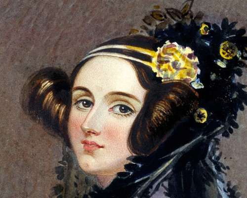
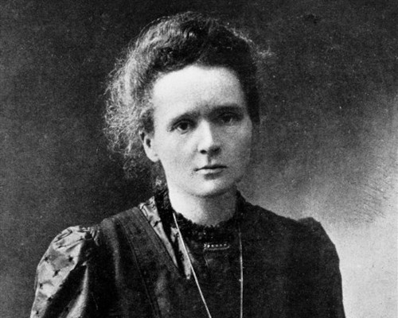
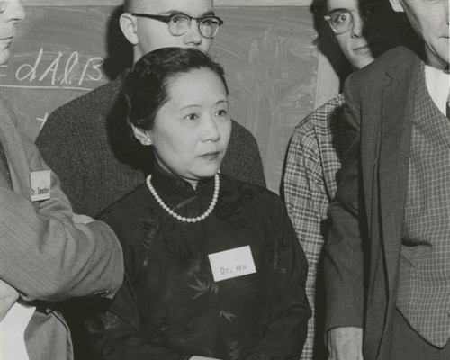
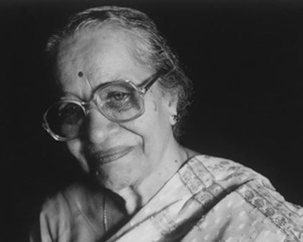
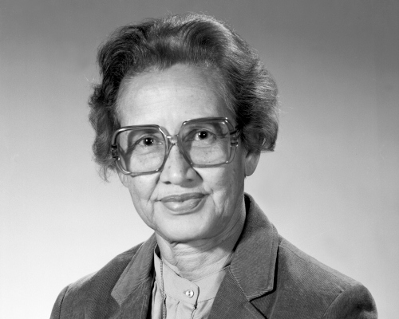
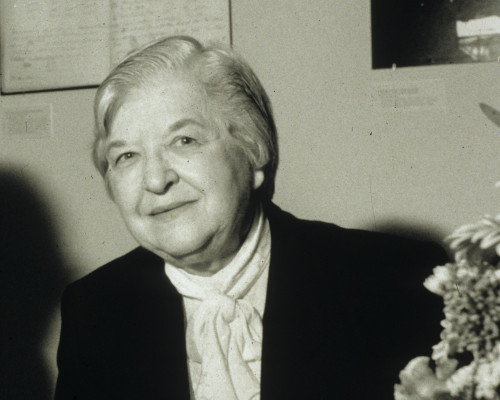
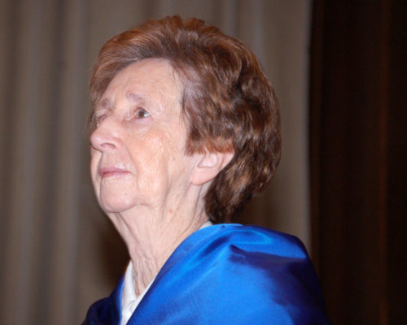
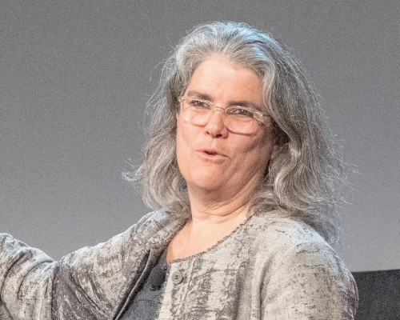

10 referentes científicas
O1
Programación
Ada Lovelace
(-)

O2
Física y química
Marie Curie
(-)

O3
Física nuclear
Chien-Shiung Wu
(-)

O4
Ingeniería de telecomunicaciones
Hedy Lamarr
(-)
O5
Biomedicina
Kamal Ranadive
(-)

O6
Matemáticas
Katherine Johnson
(-)

O7
Ingeniería química
Stephanie Kwolek
(-)

O8
Bioquímica
Margarita Salas
(-)

O9
Virología
Flossie Wong-Staal
(-)

10
Astronomía
Andrea Ghez
()
